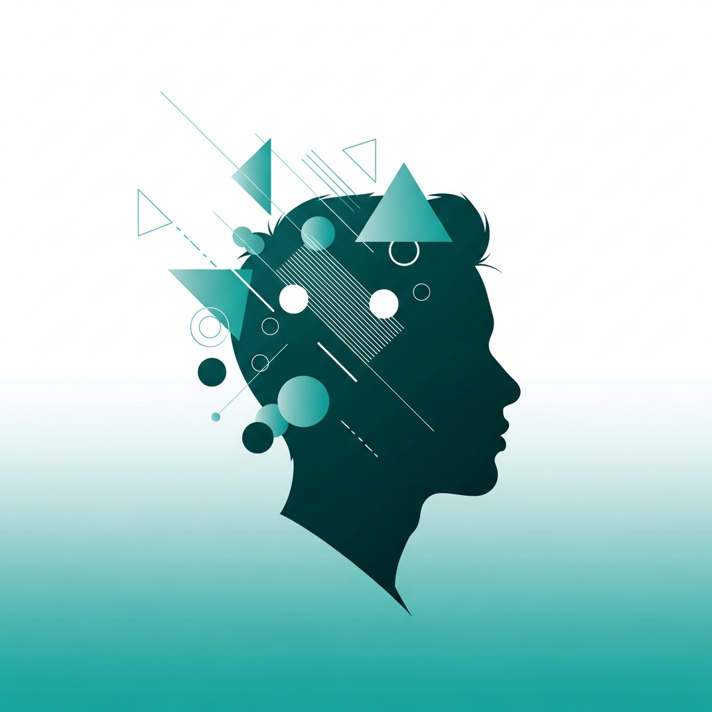
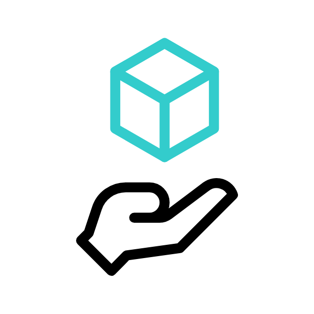
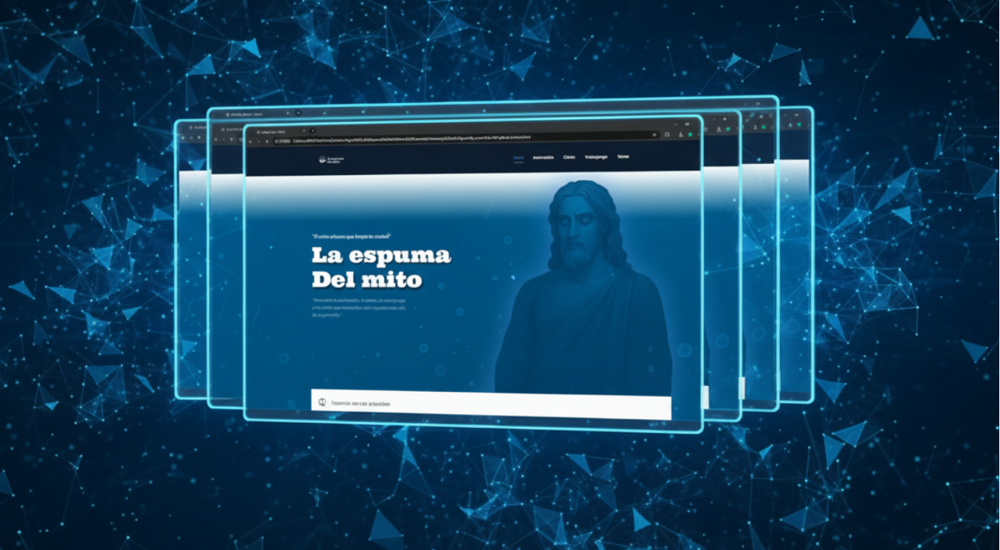
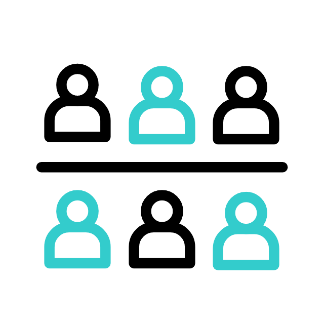

IA + RA + Web
Tecnologías emergentes
Pensamiento UX
Centrado en usuario
UX/UI Designer | Front-End Developer
Transformo problemas complejos en experiencias digitales claras, usables y centradas en las necesidades reales del usuario.


Soy Ingeniero en Multimedia especializado en UX/UI Design y desarrollo front-end. Mi enfoque se centra en entender las necesidades reales de los usuarios para crear soluciones que generen impacto.
Combino pensamiento de diseño, investigación de usuarios y habilidades técnicas para desarrollar interfaces claras, usables y orientadas a resultados. Me apasiona resolver problemas complejos con soluciones simples.
Tengo experiencia trabajando con equipos multidisciplinarios en proyectos de IA, realidad aumentada y gamificación. Busco prácticas profesionales donde pueda aportar valor y seguir creciendo como diseñador UX/UI.
Cada proyecto es un caso de estudio completo: desde la identificación del problema hasta la solución final, documentando decisiones de diseño y resultados.

La evaluación de CVs manualmente son criterios inconsistentes.
Plataforma que analiza CVs automáticamente según métricas personalizadas por el usuario.


Web + Realidad AumentadaLos estudiantes tienen dificultad para comprender conceptos complejos en STEAM.
Plataforma con lecciones, videos y quizzes que hacen lo teórico más accesible con AR.


Web + Animación + GamificaciónNecesidad de conectar con audiencias jóvenes de forma inmersiva.
Experiencia que combina campaña web, animación y elementos de juego para engagement.

Necesidad de presencia web profesional para diferentes clientes y marcas personales.
Desarrollo de sitios responsivos con WordPress, HTML, CSS y JavaScript.
Un enfoque estructurado que garantiza soluciones centradas en el usuario, desde la investigación inicial hasta la evaluación final.
Entrevistas, encuestas y análisis para entender usuarios y contexto
Identificación clara del problema y objetivos a resolver
Estructura del contenido, flujos y navegación
Bocetos de baja fidelidad en Figma
Interfaces visuales, sistemas de diseño y componentes
Desarrollo front-end con HTML, CSS, JavaScript
Tests de usabilidad, iteración y mejora continua
Competencias técnicas y de diseño que me permiten abordar proyectos de manera integral, desde la investigación hasta la implementación.
Busco prácticas profesionales donde pueda aportar mis habilidades de diseño UX/UI y desarrollo front-end. ¡Conversemos sobre cómo puedo agregar valor a tu equipo!